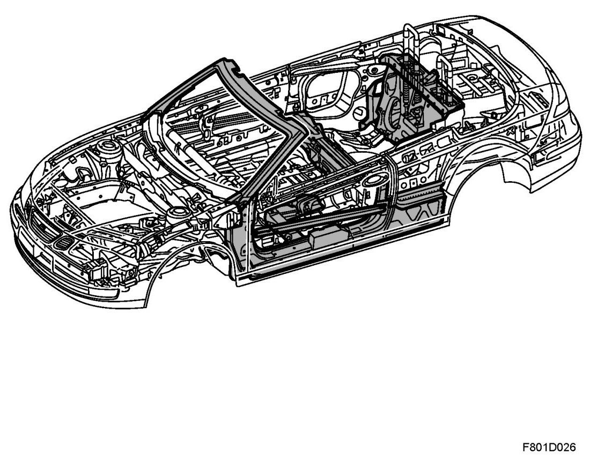

Impact Safety, CV
Impact Safety, CV

Impact safety protection
The most distinctive of the car's protection properties in the event of a collision are:
- A sturdy cabin surrounded by deformation zones
- DynaCage rollover protection with concealed pop-up rollover hoops
- Fully-integrated seatbelts in the front seats
- Saab Active Head Restraints (SAHR)
- Two-stage front airbags and side airbags that protect the head and torso
Safety structure
The car has a strong steel structure that is designed to protect the cabin enclosure and passengers by contributing to deformation resistance.
The sections that have been reinforced or added are:
- The A-pillars are manufactured with up to four layers of 1 - 4 mm-thick steel panels and with reinforcing profiles that stiffen the areas. These act together with the sturdy windscreen frame as the front rollover protection in the event of a rollover accident.
- The sill area, A-pillar and B-pillar area form a strong unit that makes the car more torsion-resistant and enhances protection in the event of a front or side impact.
- The sturdy rear seat member, which is underneath the rear seat, is linked to the B-pillar area. The member reinforces the side impact protection.
- The torsion box is an energy-absorbing deformation zone between the rear wheel housings. A side panel box, which is between the B-pillar and the C-pillar area, is an extension of the torsion box that enhances protection in the event of a side impact. The torsion box increases body rigidity.
Front and rear-end collision
The front and rear deformation zones are built with precision-designed parts made with high-strength steel that are engineered to absorb, distribute and divert as much energy from an impact as possible and provide effective protection for the passengers.
The large front deformation zones are designed to create stable and robust deformation characteristics. The central member distributes the force to a large surface. The front structure has three load routes per side. These load routes are linked together via crossmembers to distribute the force.
Side impact
In the event of a side impact, the forces will follow the load routes via the B-pillar area, sill area and the A-pillar area. From here, the forces will then be distributed to the torsion box, rear seat member and floor structure.
IMPORTANT: Always refit the spacers in the doors if they have been removed. This is extremely important for maintaining the safety demands on the car in the event of a side collision.
The door's impact member, which is heavily reinforced, is made of HSS steel and absorbs some of the forces in a side impact.